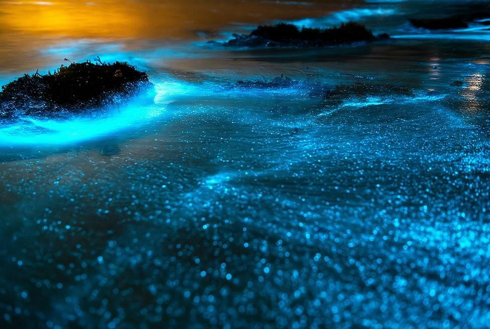
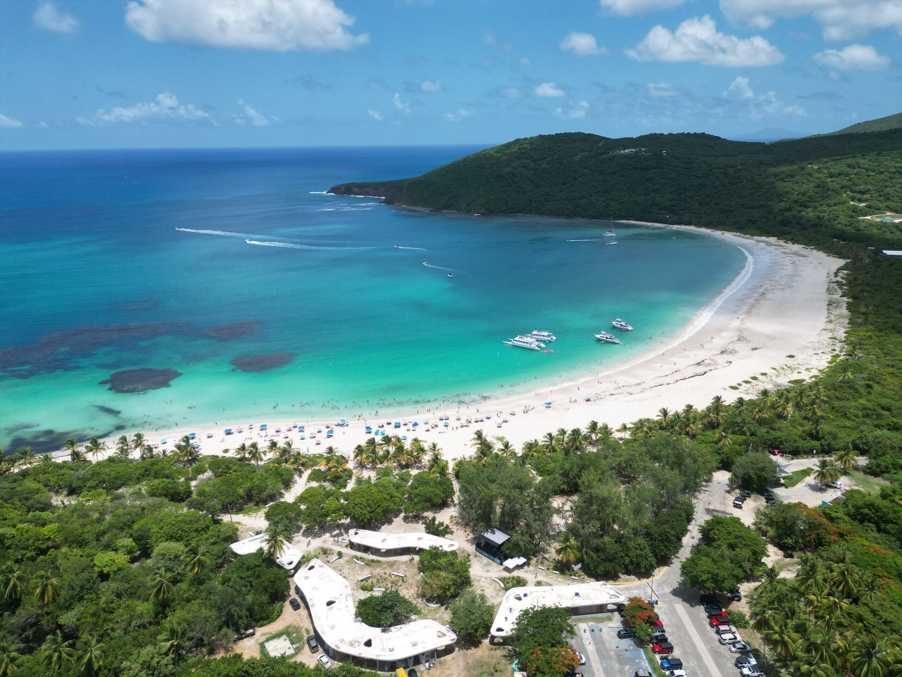

Puerto Rico offers a variety of experiences for every type of traveler. You can immerse yourself in its rich history and culture by exploring historic sites, enjoying the vibrant local food scene, and learning about the island's traditions. Nature lovers can hike through lush rainforests, relax on beautiful beaches, or explore unique natural wonders. Whether you're seeking adventure, relaxation, or cultural discovery, Puerto Rico provides a diverse mix of activities that promise unforgettable memories.
The Scenery

Puerto Rico is home to some of the most stunning bioluminescent bays in the world, where tiny organisms in the water glow at night, creating a magical and otherworldly experience. These "bio bays" light up when disturbed, making kayaking or boating through them an unforgettable adventure. The most famous bio bay is located in Vieques, known as Mosquito Bay, which is considered the brightest in the world. Other bio bays, like those in Fajardo and La Parguera, also offer incredible nighttime experiences where the water glows a vibrant blue or green. Visiting these bays is a must-do for nature lovers and anyone seeking a truly unique experience in Puerto Rico.
El Yunque National Forest is a must-see destination in Puerto Rico, renowned for being the only tropical rainforest in the U.S. National Forest System. Located in the northeastern part of the island, it offers visitors a lush, green paradise filled with waterfalls, diverse wildlife, and scenic hiking trails. Popular spots like La Mina Falls and Yokahú Tower provide stunning views of the forest and the surrounding landscape. Whether you’re into hiking, birdwatching, or just enjoying the natural beauty, El Yunque’s peaceful environment and rich biodiversity make it an unforgettable experience for nature lovers.

Flamenco Beach, located on the island of Culebra, is often ranked among the most beautiful beaches in the world. Known for its soft white sand, crystal-clear turquoise waters, and vibrant coral reefs, it's the perfect spot for swimming, snorkeling, and relaxing under the sun. The beach is part of a protected nature reserve, offering a peaceful and unspoiled environment. Whether you're looking to soak up the sun, explore marine life, or enjoy stunning views, Flamenco Beach offers a tranquil escape that feels like paradise.